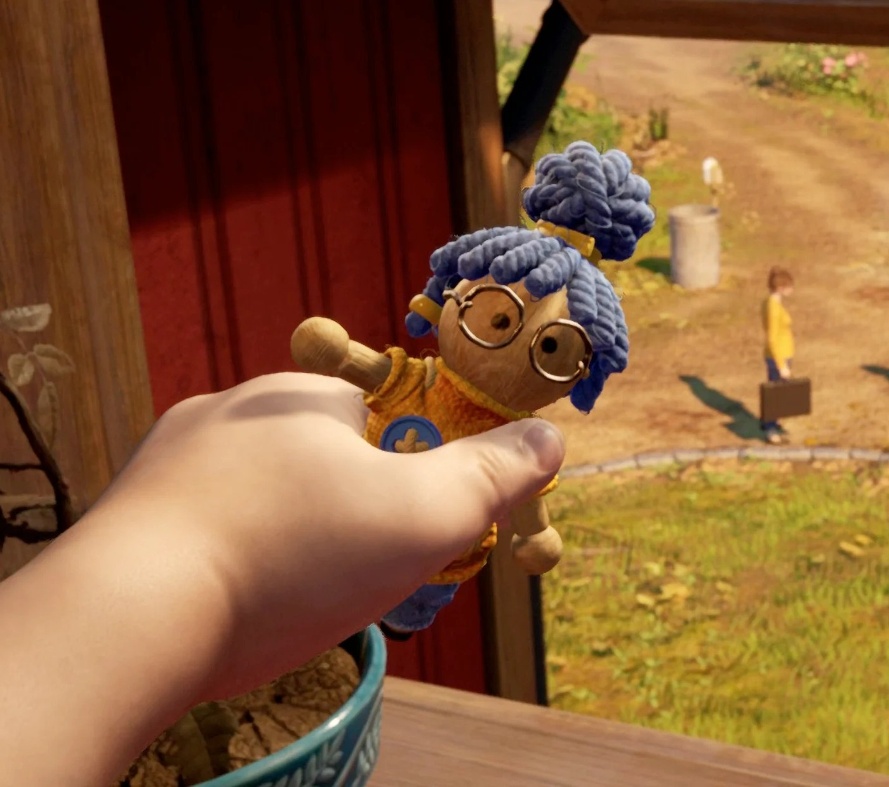
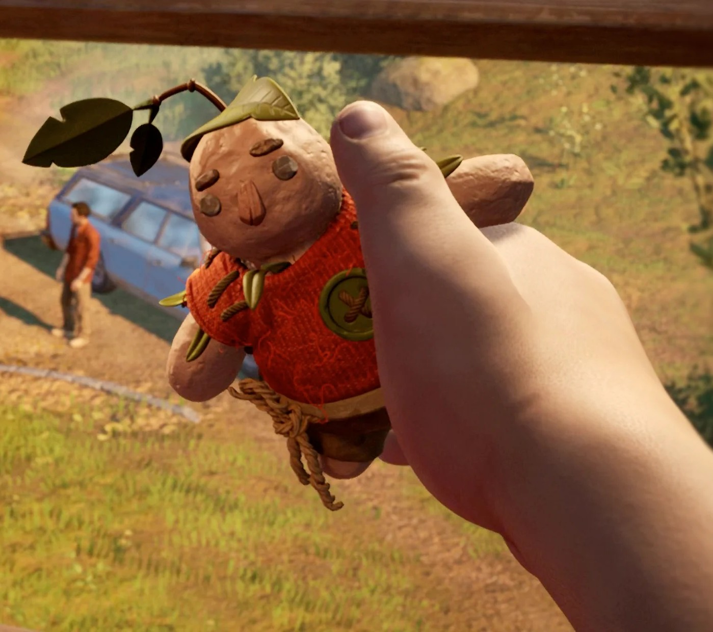

✿
ЖАНР
Приключение, платформер, головоломка
❋
РЕЖИМ
Только совместное прохождение
✦
РАЗРАБОТЧИК
Hazelight Studios
❀
ИЗДАТЕЛЬ
Electronic Arts
01 / СТОРОНА МЭЙ
Когда всё
идёт не по плану.
СТОРОНА КОДИ / 01
Начинается
волшебство.

МАЛЕНЬКИЕ ГЕРОИ

БОЛЬШИЕ ПРИКЛЮЧЕНИЯ
НАЧАЛО ИСТОРИИ
Одна семья. Два взгляда.
Коди и Мэй переживают непростой период в отношениях и стоят
на пороге развода. Их дочь Роуз очень хочет, чтобы родители
снова были вместе, и не понимает, почему привычный мир
начинает рушиться.
После необычного события Коди и Мэй обнаруживают, что
превратились в маленьких кукол. Теперь даже знакомый дом
кажется огромным, а самые обычные предметы становятся
препятствиями и целыми игровыми площадками.
ПУТЕШЕСТВИЕ ВДВОЁМ
Нужно научиться слышать.
Впереди их ждёт удивительный мир, полный живых игрушек,
странных механизмов, необычных существ и неожиданных испытаний.
Каждая новая локация предлагает свои правила и сюрпризы.
Чтобы вернуться к привычной жизни и своей дочери, героям
придётся действовать сообща. Их путешествие становится
проверкой не только ловкости и сообразительности, но и
способности понимать друг друга.
✦
Без спойлеров.
Мы оставили самое интересное для твоего собственного путешествия.